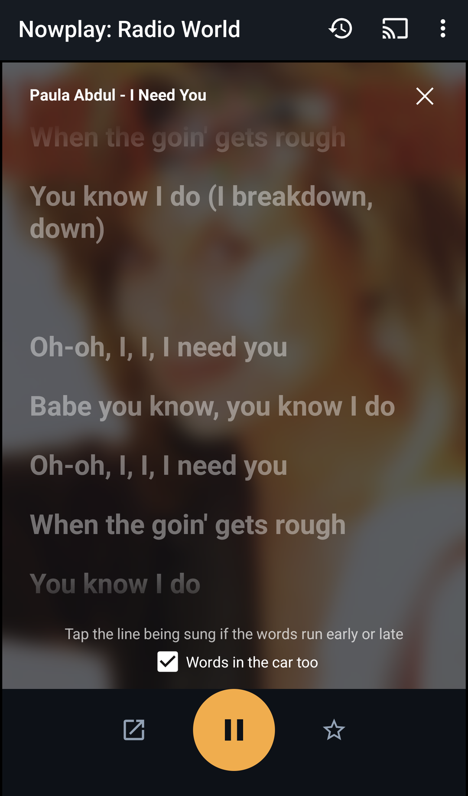
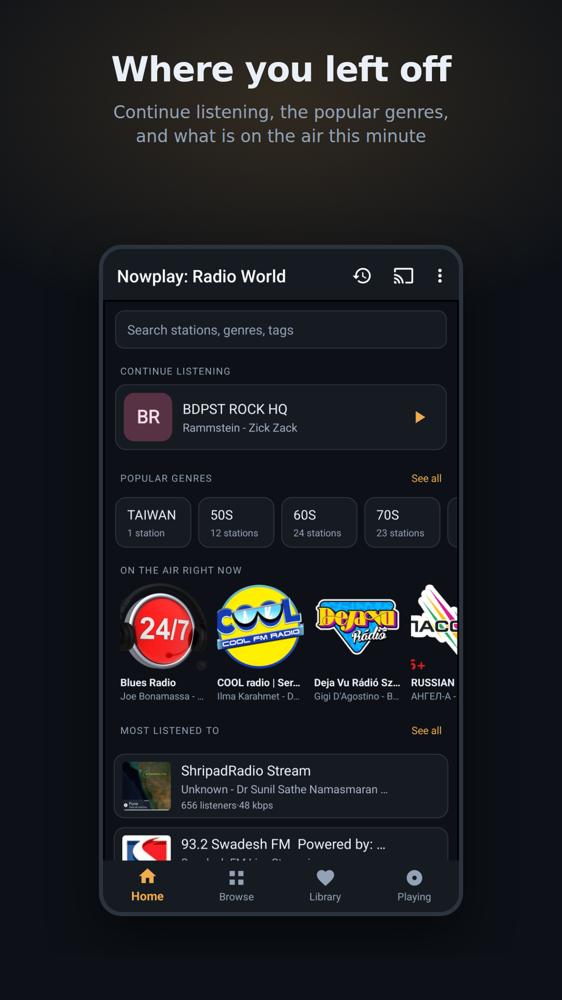
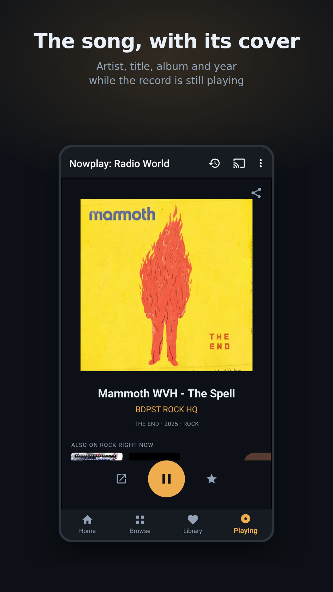
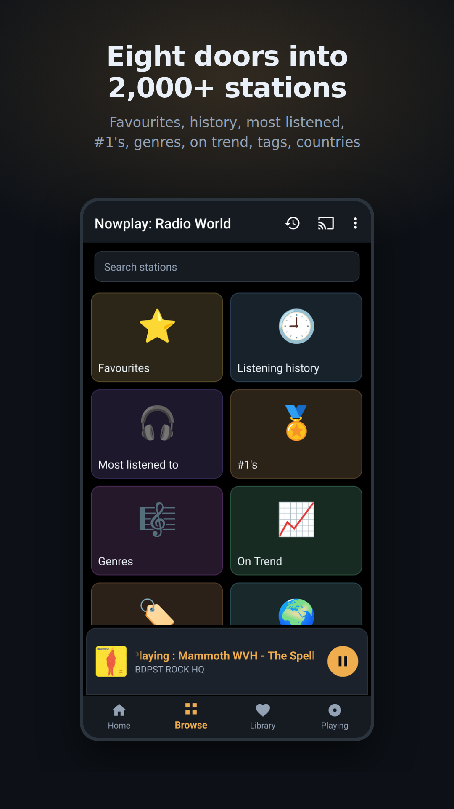
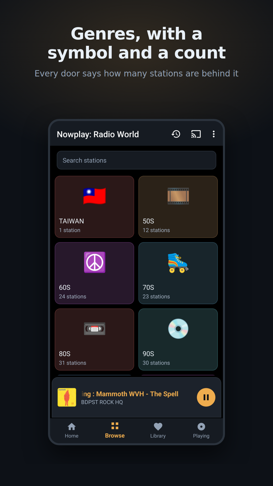
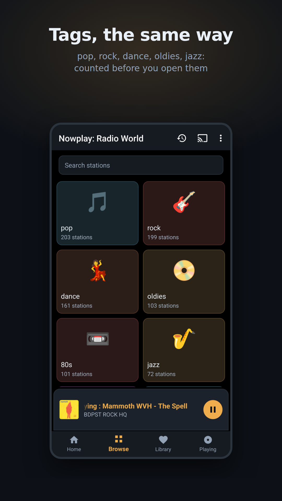
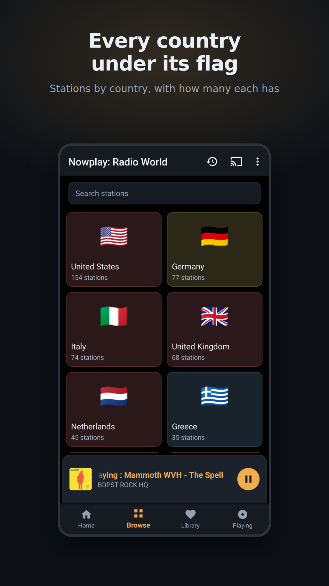
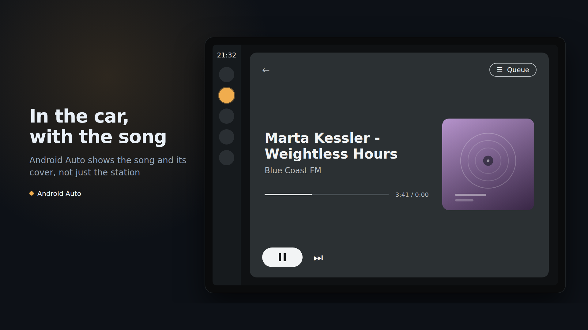
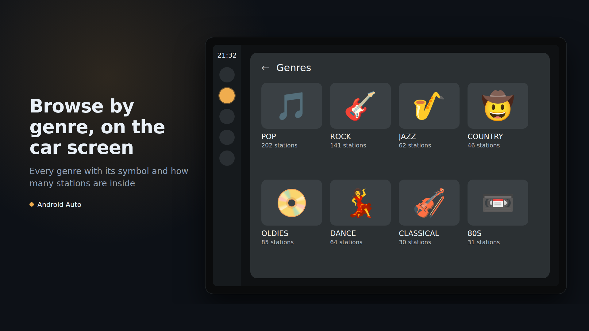
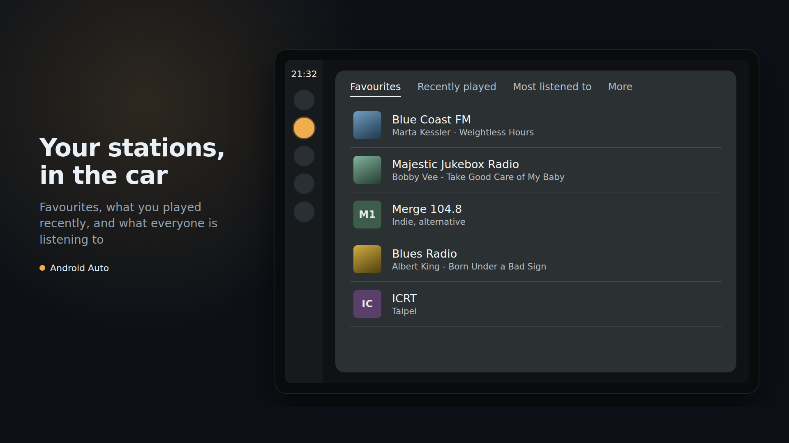

Radio that tells you the song
Internet radio with the artist, the title, the album and the year on screen while the record is still playing. Tap the song to read who the artist is. Every track you hear is remembered, with the station it was on.
Get it on Google Play
Who is that?
Tap the song and the artist's story comes up from Wikipedia, in your language, while the record plays.
On the air, right now
A shelf of stations and what each is playing this minute, checked every few minutes, for the whole world.
2,000+ stations that work
Every station is connected to and checked within the last week. Dead links are taken out before you meet them.


The words, as the song goes
Tap Lyrics under the cover and the words come up line by line with the song, the way the music players show them: the line being sung bright, the rest waiting under it. A radio stream carries no position, so when the words run early or late, tap the line being sung and they fall into place. Turn on Words in the car too and Android Auto shows the line being sung under the song. The words come from LRCLIB, a community lyrics library.

As it is on the phone
Photographs of the app running, not drawings: the cover of the record that was on, and the doors, genres, tags and countries with how many stations are behind each.






In the car, with the song
Android Auto shows the song and its cover on the car screen, not just the station. Favourites, what you played recently and what everyone is listening to are the first three tabs; genres, tags and countries browse by picture, with a count on every folder. Everything you kept on the phone is there in the car.


